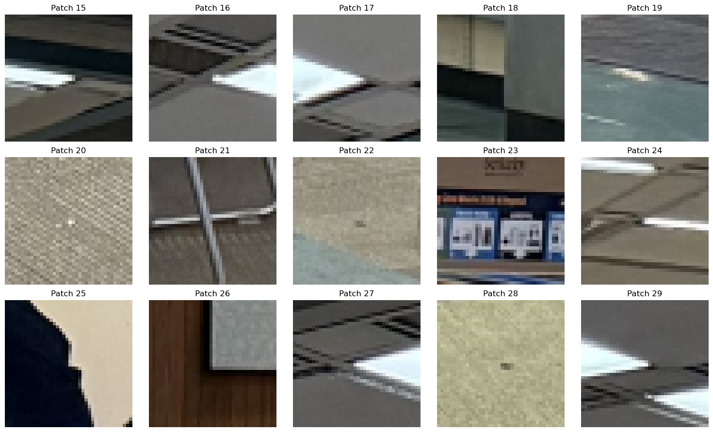
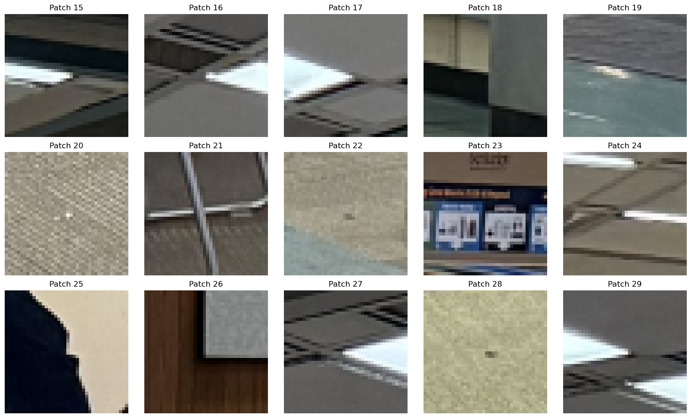

Part A: Panorama Stiching
Part 1: Shot the Pictures
I shot 6 images using a Sony A7R4 camera with a 50mm lens and a tripod. I ensured that each photo has about 40% of overlapped area and can find corresponding points in each image.
Here are the images for demonstration:

Part 2: Recover Homographies
I used the tool I implemented in Project 3 to select 10 correspondence points between the third and the fourth images, and here are the points:
Now, given the corresponding points in the homogeneous system
$$
p = \begin{bmatrix}p_x^{(1)}\\ p_y^{(1)}\\1\end{bmatrix} \quad q = \begin{bmatrix}q_x^{(1)}\\ q_y^{(1)}\\1\end{bmatrix}
$$
and the homography matrix
$$
H = \begin{bmatrix}h_1&h_2&h_3\\ h_4&h_5&h_6 \\h_7&h_8&1\end{bmatrix}
$$
We have
$$
Hp = \begin{bmatrix}
p_x^{(1)}h_1+p_y^{(1)}h_2+h_3\\
p_x^{(1)}h_4+p_y^{(1)}h_5+h_6\\
p_x^{(1)}h_7+p_y^{(1)}h_8+1
\end{bmatrix}
$$
Since we are in the homogeneous system, we should divide the first 2 components by the third to get the normalized value in the Cartesian coordinate, and equate that to the target points:
$$
\begin{cases}
\frac{p_x^{(1)}h_1+p_y^{(1)}h_2+h_3}{p_x^{(1)}h_7+p_y^{(1)}h_8+1} = q_x^{(1)}\\
\frac{p_x^{(1)}h_4+p_y^{(1)}h_5+h_6}{p_x^{(1)}h_7+p_y^{(1)}h_8+1} = q_y^{(1)}
\end{cases}
$$
Simplifying this gives:
$$
\begin{cases}
p_x^{(1)}h_1+p_y^{(1)}h_2+h_3 + 0h_4 + 0h_5 + 0h_6 - q_x^{(1)}p_x^{(1)}h_7 - q_x^{(1)}p_y^{(1)}h_8 = q_x^{(1)}\\
0h_1 + 0h_2 + 0h_3 + p_x^{(1)}h_4+p_y^{(1)}h_5+h_6 - q_y^{(1)}p_x^{(1)}h_7 - q_y^{(1)}p_y^{(1)}h_8 = q_y^{(1)}
\end{cases}
$$
Which further suggests
$$
\begin{bmatrix}
p_x^{(1)} & p_y^{(1)} & 1 & 0 & 0 & 0 & -q_x^{(1)}p_x^{(1)} & -q_x^{(1)}p_y^{(1)}\\
0 & 0 & 0 & p_x^{(1)} & p_y^{(1)} & 1 & -q_y^{(1)}p_x^{(1)} & -q_y^{(1)}p_y^{(1)}
\end{bmatrix}
\begin{bmatrix}h_1\\h_2\\h_3\\h_4\\h_5\\h_6\\h_7\\h_8\end{bmatrix} = \begin{bmatrix}q_x^{(1)}\\ q_y^{(1)}\end{bmatrix}
$$
Therefore, to solve for \( H \) that accommodates each \( p, q \), we integrate all the points into the matrix
$$
A = \begin{bmatrix}
p_x^{(1)} & p_y^{(1)} & 1 & 0 & 0 & 0 & -q_x^{(1)}p_x^{(1)} & -q_x^{(1)}p_y^{(1)}\\
0 & 0 & 0 & p_x^{(1)} & p_y^{(1)} & 1 & -q_y^{(1)}p_x^{(1)} & -q_y^{(1)}p_y^{(1)}\\
\vdots & \vdots & \vdots & \vdots & \vdots & \vdots & \vdots & \vdots\\
p_x^{(N)} & p_y^{(N)} & 1 & 0 & 0 & 0 & -q_x^{(N)}p_x^{(N)} & -q_x^{(N)}p_y^{(N)}\\
0 & 0 & 0 & p_x^{(N)} & p_y^{(N)} & 1 & -q_y^{(N)}p_y^{(N)} & -q_y^{(N)}p_y^{(N)}
\end{bmatrix}
$$
and
$$
b = [q_x^{(1)}, q_y^{(1)}, \cdots, q_x^{(N)}, q_y^{(N)}]^T
$$
and solve \( Ah = b \) using the least squares solver.
Using this approach, we are able to find the \( H \) that transforms pt1 to pt2 effectively.
Transforming para_3 to the points in para_4 gives the following image:

Part 3: Rectification
To ensure that our homography works correctly, we can try to rectify an image with a known rectangular object to a standard rectangular shape. Here's a photo of my laptop on my bed.

Due to perspective, it's not standardly rectangular. We can use homography to correct it:

Part 4: Panorama Blending
Now, given image 1 and image 2, we can use the computed homography to wrap img1 perspectively to the plane of img2, but we still need to blend the two images to create a seamless panorama.
Here are the steps to achieve this process:
- Compute the homography \( H \) from
pts1 and pts2.
- Transform the corner points of
img1 to get the position of img1 in the plane of img2. Use this to get the new canvas size and compute the translation T needed to move the images to the new coordinate.
- Use
T and H to wrap img1 onto the plane of img2.
- Use threshold masking to find the mask of
wrapped_img1 and wrapped_img2 respectively.
- Compute the alpha masking using distance to the background. Here's one example:
- Use the algorithm from Project 2, with the distanced alpha as the mask, to blend the images using multi-band blending.
Here's the result of combining para_3 and para_4:

And here's the full panorama of combining all 6 images together:
The result of merging the moffit images:
The result of merging 3 images on the Maine coast:

Bells & Whistles
3D Rotational Model
Assume the focal length \(f\) is fixed, and the image is captured by purely rotating about the optical center. Under this assumption, we can model the scene such that the points in the images can be aligned using a purely 3D rotation. This simplification reduces the degrees of freedom in our model, making the computation more robust and efficient.
Specifically, we compute the homography using the formula
$$
H = KRK^{-1}
$$
where \( K \) is the camera intrinsic matrix and \( R \) is the rotation matrix. The camera intrinsic matrix is typically defined as
$$
K = \begin{bmatrix}
f & 0 & c_x \\
0 & f & c_y \\
0 & 0 & 1
\end{bmatrix}
$$
Since I use a full-frame camera with a 50mm lens and the image has resolution \((H, W)\), we can compute the focal length by
$$
\text{pixel}_x = \frac{\text{SensorSize}_w}{W} \quad \text{pixel}_y = \frac{\text{SensorSize}_h}{H}
$$
$$
f_x = \frac{50}{\text{pixel}_x} \quad f_y = \frac{50}{\text{pixel}_y}
$$
$$
c_x = \frac{W}{2} \quad c_y = \frac{H}{2}
$$
This accounts for \( K \).
To find \( R \), we can use the Kabsch algorithm on the camera-intrinsic-normalized \( \text{pts1} \) and \( \text{pts2} \). That means, we first normalize \( P \in \mathbb{R}^{N \times 3} \) and \( Q \) by \( \bar{P} = (K^{-1}P^{T})^{T} \), and similarly for \( \bar{Q} \), because the homography \( H = KRK^{-1} \) performs the camera normalization first.
Then, we want to find the rotation \( R \) that minimizes the cross-correlation between \( \bar{P} \) and \( \bar{Q} \). From linear algebra, we know that this involves performing the singular value decomposition (SVD) of the covariance matrix formed by the normalized point sets \( \bar{P} \) and \( \bar{Q} \). By decomposing this covariance matrix, we obtain the matrices \( U \), \( \Sigma \), and \( V^\top \), which are then used to construct the optimal rotation matrix \( R \) as
$$
R = V U^T.
$$
We aim to find the rotation matrix \(R\) that minimizes the cross-correlation between \(\bar{P}\) and \(\bar{Q}\). From linear algebra, this involves performing the SVD of the covariance matrix formed by the normalized point sets (\(\bar{P}^T\bar{Q}\)). By decomposing this covariance matrix, we obtain the matrices \(U\), \( \Sigma \), \( V^T\), which are then used to construct the optimal rotation matrix \(R\) as:
$$
R = V E U^T
$$
where \( E = \mathrm{diag}(1,1,\det(VU^T)) \).
This rotation matrix aligns the points in \(\bar{P}\) with those in \(\bar{Q}\) by minimizing the alignment error.
Here are the results of using the rotational model to align para_3 and para_4:
It's obvious that there is less distortion in the left region.
Here's also the rotational result of merging two images about the Maine coast:

The alignment is more defective because I wasn't using a tripod when taking these photos.
Part B: Automatic Feature Descriptor Extraction and Macthing
Automatic Panorama Creation
Introduction
In the last section, we annotate keypoints by hands and use them to compute the homography matrix \(H\) and wrap one image to the plane of the other. In practice, this process is both tedious and inaccurate. When selecting points from a small window using pointers, we can accidentally select points that drift by a few pixels, leading to non-exact matchings.
In this project, I will build a pipeline to automate this process of keypoints annotation and build matchings between two images we intend to merge.
Harris Corner Detector
For the initial search of interest points, we use the harris corner detector which, as its name suggests, search points that are at the "corners." Given window size \(w\), image \(I(x,y)\), we:
- Apply gaussian blur with \(\sigma_b\), then find the derivative w.r.t \(x\) and \(y\), respectively \(I_x\) and \(I_y\).
- Find \(I_{xx} = I_x^2\), \(I_{yy} = I_y^2\), \(I_{xy} = I_xI_y\).
- Given point \((u,v)\), the sliding window \(\mathcal{W} = [u - w/2:u+ w/2, v - w/2, v+w/2]\). Compute \(S_{xx} = \sum_{(x,y)\in \mathcal{W}}I_{xx}\), \(S_{yy} = \sum_{(x,y)\in \mathcal{W}}I_{yy}\), \(S_{xy} = \sum_{(x,y)\in \mathcal{W}}I_{xy}\).
- For each (u,v), compute the harris response \(h = \frac{S_{xx}S_{yy} - S_{xy}^2}{S_{xx}S_{yy}}\).
- Find all points such that the harris response is above the threshold.
Here's the result of running harris corner detection on the images of moffit libraries, where I also applied a non-maximum filtering with kernel size of 10 pixels and discard 20 pixels near the edge.
Adaptive Non-maximum Suppression
There are too many points in the results of harris corner detection, and in many cases, a very distinctive corner may have many detected points around it. We somehow want the points to be more evenly distributed. The algorithm of adaptive non-maximum suppression aims to preserve points that are the local max of its region and filter out the less representative ones. Here's the algorithm description using a KD Tree:
- Given harris responses:
coords (N,2) and the corresponding response values h (N,1), we sort the coords in reversed order according to \(h\).
- Maintain a radii recorder for each point in
coords that represents the maximum radius such that this point has the strongest harris response within the circle of this radius.
- Initialize an empty KD tree.
- For each point in the sorted array, if it's the first element, mark its radii as
inf and insert it into the KD tree. For later points, we query the tree the distance to its nearest neighbor, r, and make it the radii of that point. Then, we insert the point into the tree. (The reason this works is because at any time, the tree only has points with stronger response than the point being queried)
- Sort the
coords according to their radii, and take the first n_points coords.
Here's the result of running ANMS on the moffit pictures. It's obvious that the points are pretty evenly distributed. I only took 500 points.
Feature Descriptor Extractor
Then, we need a way to effectively compare the keypoints in two images in order to find best matches. Here, for each point in the ANMS result, I took a \(40\times 40\) patch around that pixel, apply a low-pass filter and then resize it to a \(8\times 8\) patch. Then, I flattened it and normalize it by its mean and variance. This creates a feature descriptor for the interest point. Here are some patches before the resize and normalization for visualization purposes:
 

Feature Matching
After deriving the feature descriptors for both images, we need to establish correspondences between the points in the two images. Here, I estimate the similarity between two patches by computing the \(l_2\) distance between the two descriptors. The algorithm description is:
- Create two KD Trees respectively for
descriptors1 and descriptors2. And two arrays keeping track of the best matches.
- For each descriptor in
descriptors1, query the KDTree2 about its nearest neighbor in image 2 (nn1, d1) and the second nearest neighbor (nn2, d2). Then, we only append nn1 to the best matches for image 1 if:
- (1)
d1 < thresh_abs. That means the two patches are similar enough
- (2)
d1/(d2+1e-6) < thresh_ratio. This is used to implement Lowe's ratio test that we take the point only when the nearest neighbor is much better than the second to best.
We do the same for each descriptor in descriptors2.
- For the matching results in
match1 and match2, we add a pair (pt1, pt2) to the final result if the best match of pt1 is pt2 and vice versa. This means that we only accept double selection.
Here's the result when I set thresh_abs=5 and thresh_ratio=0.7. We have 27 matches, and it's notable that the outliers have dramatically decreased and most points look like good matchings.

Random Sample Consensus (RANSAC)
However, even after all these procedures, there are still outliers existing in the matchings, and it's risky if we just compute the homographies using all of them. To address this issue, I used the RANSAC algorithm to create a much more robust homography H. The algorithm follows the guidelines below:
- The algorithm has inputs
matching (result from last step), n_loop (number of iteration loops to run), epsilon (criterion for determining if a point is an inlier or an outlier)
- Initialize
best_H to be the trivial \(3\times 3\) matrix, and the inliers to be an empty array.
- Repeat for
n_loop times, each time we randomly pick 4 points, without replacement, from matching, and solve an exact homography H using these points. Then, we transform points from \(I_A\) using H, and compute the \(l_2\) distance between transformed points and the matching points in \(I_B\). Record the points such that the distance is smaller than epsilon, call them inliers.
- If the number of inliers of this round is larger than the number in the global
inliers, we change the global pointer to both the inliers and H from this round.
- After all iterations, recompute
H using the final set of inliers, and return H.
Panorama Stitching
Finally, with the H derived from RANSAC, we can use the panorama stitching pipeline built in part A to merge two images into a panorama. Here are some comparisons between hand-annotated panoramas and the panoramas created using the pipeline we just introduced:


The roof image (merging 5 pictures) using the automated pipeline:

The roof image using hand annotated keypoints in part A:

Bells & Whistles: Multiscale Oriented Patches (Scale and Orientation Invariant)
In the paper of MOPS, the author proposed the method of keypoint matching that is invariant to both scale and orientation. In this project, I also implemented this pipeline.
Multiscale Harris Detection
In the multiscale harris detection, we detect harris corners on different scales of the image across a pyramid to be robust to scale variations. At each layer, we do the similar detection as a single layer harris detection, but this time, for each interest point, we also fit the points around the interest point (with w_size=3) and their harris responses to a 2D quadratic function, and use least squares to find the minima. We use this technique to refine the interest point to subpixel precision for higher computation accuracy.

It's worthy noting that in order to make the features rotational invariant, we also estimate the dominate orientation of each interest point. Specifically, we find the derivatives of gaussian with width \(\sigma_o = 4.5\). Given interest point \((u,v)\), we have:
\( u = \begin{bmatrix}I_x(u,v)\\I_y(u,v) \end{bmatrix} \)
and
\(\mathrm{orientation} = \frac{u}{||u||} = \begin{bmatrix}\cos \theta \\ \sin \theta\end{bmatrix}\)
then
\(\theta = \arctan \frac{u_1}{u_2}\)
Here's a picture showing the orientations under different scales:


(The result displayed above are actually after the ANMS)
Multiscale ANMS
Similarly, we run ANMS on each layer of the scale and here are the result:
Feature Descriptor Extraction
At each scale level, we still extract a \(40\times 40\) patch (at that scale). But to accommodate rotational invariant extracting, given the orientation \(\theta\), we take the patch along the dominate orientation and then resize it to the \(8\times 8\) smaller patch, flatten and normalize as stated above. Here are some results of the rotated patches (before downsizing and normalizing):
Feature Matching
Before running feature matching, we merge the descriptors of all layers into one array of descriptors. Then we run the regular algorithm introduced above.
Here are the matching result of the moffit library:

The matching is very successful and, for the same set of thresholds, there are more matchings in MOPS than the single scale methods discussed above.
After merging the descriptors, we combine interest points of different scales or angles into consideration and allow the algorithm to find the same points under scale or rotation.
Here's one example of running MOPS on the roof images:
And the printing log suggests that the algorithm find best homography with 141 inliers out of 313 matches, which is a huge improvement from the previous 23 inliers out of 83 matches when doing this using regular methods.
Part 1: Shot the Pictures
I shot 6 images using a Sony A7R4 camera with a 50mm lens and a tripod. I ensured that each photo has about 40% of overlapped area and can find corresponding points in each image.
Here are the images for demonstration:
Part 2: Recover Homographies
I used the tool I implemented in Project 3 to select 10 correspondence points between the third and the fourth images, and here are the points:
Now, given the corresponding points in the homogeneous system
and the homography matrix
We have
Since we are in the homogeneous system, we should divide the first 2 components by the third to get the normalized value in the Cartesian coordinate, and equate that to the target points:
Simplifying this gives:
Which further suggests
Therefore, to solve for \( H \) that accommodates each \( p, q \), we integrate all the points into the matrix
and
and solve \( Ah = b \) using the least squares solver.
Using this approach, we are able to find the \( H \) that transforms pt1 to pt2 effectively.
Transforming para_3 to the points in para_4 gives the following image:
Part 3: Rectification
To ensure that our homography works correctly, we can try to rectify an image with a known rectangular object to a standard rectangular shape. Here's a photo of my laptop on my bed.
Due to perspective, it's not standardly rectangular. We can use homography to correct it:
Part 4: Panorama Blending
Now, given image 1 and image 2, we can use the computed homography to wrap img1 perspectively to the plane of img2, but we still need to blend the two images to create a seamless panorama.
Here are the steps to achieve this process:
- Compute the homography \( H \) from
pts1andpts2. - Transform the corner points of
img1to get the position ofimg1in the plane ofimg2. Use this to get the new canvas size and compute the translationTneeded to move the images to the new coordinate. - Use
TandHto wrapimg1onto the plane ofimg2. - Use threshold masking to find the mask of
wrapped_img1andwrapped_img2respectively. - Compute the alpha masking using distance to the background. Here's one example:
- Use the algorithm from Project 2, with the distanced alpha as the mask, to blend the images using multi-band blending.
Here's the result of combining para_3 and para_4:
And here's the full panorama of combining all 6 images together:
The result of merging the moffit images:
The result of merging 3 images on the Maine coast:
Bells & Whistles
3D Rotational Model
Assume the focal length \(f\) is fixed, and the image is captured by purely rotating about the optical center. Under this assumption, we can model the scene such that the points in the images can be aligned using a purely 3D rotation. This simplification reduces the degrees of freedom in our model, making the computation more robust and efficient. Specifically, we compute the homography using the formula
where \( K \) is the camera intrinsic matrix and \( R \) is the rotation matrix. The camera intrinsic matrix is typically defined as
Since I use a full-frame camera with a 50mm lens and the image has resolution \((H, W)\), we can compute the focal length by
This accounts for \( K \).
To find \( R \), we can use the Kabsch algorithm on the camera-intrinsic-normalized \( \text{pts1} \) and \( \text{pts2} \). That means, we first normalize \( P \in \mathbb{R}^{N \times 3} \) and \( Q \) by \( \bar{P} = (K^{-1}P^{T})^{T} \), and similarly for \( \bar{Q} \), because the homography \( H = KRK^{-1} \) performs the camera normalization first.
Then, we want to find the rotation \( R \) that minimizes the cross-correlation between \( \bar{P} \) and \( \bar{Q} \). From linear algebra, we know that this involves performing the singular value decomposition (SVD) of the covariance matrix formed by the normalized point sets \( \bar{P} \) and \( \bar{Q} \). By decomposing this covariance matrix, we obtain the matrices \( U \), \( \Sigma \), and \( V^\top \), which are then used to construct the optimal rotation matrix \( R \) as
We aim to find the rotation matrix \(R\) that minimizes the cross-correlation between \(\bar{P}\) and \(\bar{Q}\). From linear algebra, this involves performing the SVD of the covariance matrix formed by the normalized point sets (\(\bar{P}^T\bar{Q}\)). By decomposing this covariance matrix, we obtain the matrices \(U\), \( \Sigma \), \( V^T\), which are then used to construct the optimal rotation matrix \(R\) as:
where \( E = \mathrm{diag}(1,1,\det(VU^T)) \). This rotation matrix aligns the points in \(\bar{P}\) with those in \(\bar{Q}\) by minimizing the alignment error.
Here are the results of using the rotational model to align para_3 and para_4:
It's obvious that there is less distortion in the left region.
Here's also the rotational result of merging two images about the Maine coast:
The alignment is more defective because I wasn't using a tripod when taking these photos.
Part B: Automatic Feature Descriptor Extraction and Macthing
Automatic Panorama Creation
Introduction
In the last section, we annotate keypoints by hands and use them to compute the homography matrix \(H\) and wrap one image to the plane of the other. In practice, this process is both tedious and inaccurate. When selecting points from a small window using pointers, we can accidentally select points that drift by a few pixels, leading to non-exact matchings.
In this project, I will build a pipeline to automate this process of keypoints annotation and build matchings between two images we intend to merge.
Harris Corner Detector
For the initial search of interest points, we use the harris corner detector which, as its name suggests, search points that are at the "corners." Given window size \(w\), image \(I(x,y)\), we:
- Apply gaussian blur with \(\sigma_b\), then find the derivative w.r.t \(x\) and \(y\), respectively \(I_x\) and \(I_y\).
- Find \(I_{xx} = I_x^2\), \(I_{yy} = I_y^2\), \(I_{xy} = I_xI_y\).
- Given point \((u,v)\), the sliding window \(\mathcal{W} = [u - w/2:u+ w/2, v - w/2, v+w/2]\). Compute \(S_{xx} = \sum_{(x,y)\in \mathcal{W}}I_{xx}\), \(S_{yy} = \sum_{(x,y)\in \mathcal{W}}I_{yy}\), \(S_{xy} = \sum_{(x,y)\in \mathcal{W}}I_{xy}\).
- For each (u,v), compute the harris response \(h = \frac{S_{xx}S_{yy} - S_{xy}^2}{S_{xx}S_{yy}}\).
- Find all points such that the harris response is above the threshold.
Here's the result of running harris corner detection on the images of moffit libraries, where I also applied a non-maximum filtering with kernel size of 10 pixels and discard 20 pixels near the edge.
Adaptive Non-maximum Suppression
There are too many points in the results of harris corner detection, and in many cases, a very distinctive corner may have many detected points around it. We somehow want the points to be more evenly distributed. The algorithm of adaptive non-maximum suppression aims to preserve points that are the local max of its region and filter out the less representative ones. Here's the algorithm description using a KD Tree:
- Given harris responses:
coords(N,2) and the corresponding response valuesh(N,1), we sort the coords in reversed order according to \(h\). - Maintain a radii recorder for each point in
coordsthat represents the maximum radius such that this point has the strongest harris response within the circle of this radius. - Initialize an empty KD tree.
- For each point in the sorted array, if it's the first element, mark its radii as
infand insert it into the KD tree. For later points, we query the tree the distance to its nearest neighbor,r, and make it the radii of that point. Then, we insert the point into the tree. (The reason this works is because at any time, the tree only has points with stronger response than the point being queried) - Sort the
coordsaccording to their radii, and take the firstn_pointscoords.
Here's the result of running ANMS on the moffit pictures. It's obvious that the points are pretty evenly distributed. I only took 500 points.
Feature Descriptor Extractor
Then, we need a way to effectively compare the keypoints in two images in order to find best matches. Here, for each point in the ANMS result, I took a \(40\times 40\) patch around that pixel, apply a low-pass filter and then resize it to a \(8\times 8\) patch. Then, I flattened it and normalize it by its mean and variance. This creates a feature descriptor for the interest point. Here are some patches before the resize and normalization for visualization purposes:
Feature Matching
After deriving the feature descriptors for both images, we need to establish correspondences between the points in the two images. Here, I estimate the similarity between two patches by computing the \(l_2\) distance between the two descriptors. The algorithm description is:
- Create two KD Trees respectively for
descriptors1anddescriptors2. And two arrays keeping track of the best matches. - For each descriptor in
descriptors1, query theKDTree2about its nearest neighbor in image 2(nn1, d1)and the second nearest neighbor(nn2, d2). Then, we only appendnn1to the best matches for image 1 if:- (1)
d1<thresh_abs. That means the two patches are similar enough - (2)
d1/(d2+1e-6)<thresh_ratio. This is used to implement Lowe's ratio test that we take the point only when the nearest neighbor is much better than the second to best.
descriptors2. - (1)
- For the matching results in
match1andmatch2, we add a pair(pt1, pt2)to the final result if the best match ofpt1ispt2and vice versa. This means that we only accept double selection.
Here's the result when I set thresh_abs=5 and thresh_ratio=0.7. We have 27 matches, and it's notable that the outliers have dramatically decreased and most points look like good matchings.
Random Sample Consensus (RANSAC)
However, even after all these procedures, there are still outliers existing in the matchings, and it's risky if we just compute the homographies using all of them. To address this issue, I used the RANSAC algorithm to create a much more robust homography H. The algorithm follows the guidelines below:
- The algorithm has inputs
matching(result from last step),n_loop(number of iteration loops to run),epsilon(criterion for determining if a point is an inlier or an outlier) - Initialize
best_Hto be the trivial \(3\times 3\) matrix, and theinliersto be an empty array. - Repeat for
n_looptimes, each time we randomly pick 4 points, without replacement, frommatching, and solve an exact homographyHusing these points. Then, we transform points from \(I_A\) usingH, and compute the \(l_2\) distance between transformed points and the matching points in \(I_B\). Record the points such that the distance is smaller thanepsilon, call them inliers. - If the number of inliers of this round is larger than the number in the global
inliers, we change the global pointer to both the inliers andHfrom this round. - After all iterations, recompute
Husing the final set ofinliers, and returnH.
Panorama Stitching
Finally, with the H derived from RANSAC, we can use the panorama stitching pipeline built in part A to merge two images into a panorama. Here are some comparisons between hand-annotated panoramas and the panoramas created using the pipeline we just introduced:
The roof image (merging 5 pictures) using the automated pipeline:
The roof image using hand annotated keypoints in part A:
Bells & Whistles: Multiscale Oriented Patches (Scale and Orientation Invariant)
In the paper of MOPS, the author proposed the method of keypoint matching that is invariant to both scale and orientation. In this project, I also implemented this pipeline.
Multiscale Harris Detection
In the multiscale harris detection, we detect harris corners on different scales of the image across a pyramid to be robust to scale variations. At each layer, we do the similar detection as a single layer harris detection, but this time, for each interest point, we also fit the points around the interest point (with w_size=3) and their harris responses to a 2D quadratic function, and use least squares to find the minima. We use this technique to refine the interest point to subpixel precision for higher computation accuracy.
It's worthy noting that in order to make the features rotational invariant, we also estimate the dominate orientation of each interest point. Specifically, we find the derivatives of gaussian with width \(\sigma_o = 4.5\). Given interest point \((u,v)\), we have:
and
then
Here's a picture showing the orientations under different scales:
(The result displayed above are actually after the ANMS)
Multiscale ANMS
Similarly, we run ANMS on each layer of the scale and here are the result:
Feature Descriptor Extraction
At each scale level, we still extract a \(40\times 40\) patch (at that scale). But to accommodate rotational invariant extracting, given the orientation \(\theta\), we take the patch along the dominate orientation and then resize it to the \(8\times 8\) smaller patch, flatten and normalize as stated above. Here are some results of the rotated patches (before downsizing and normalizing):
Feature Matching
Before running feature matching, we merge the descriptors of all layers into one array of descriptors. Then we run the regular algorithm introduced above.
Here are the matching result of the moffit library:
The matching is very successful and, for the same set of thresholds, there are more matchings in MOPS than the single scale methods discussed above.
After merging the descriptors, we combine interest points of different scales or angles into consideration and allow the algorithm to find the same points under scale or rotation.
Here's one example of running MOPS on the roof images:
And the printing log suggests that the algorithm find best homography with 141 inliers out of 313 matches, which is a huge improvement from the previous 23 inliers out of 83 matches when doing this using regular methods.